Digital Public Administration factsheet 2023
Finland


1 Interoperability State-of-Play 4
2 Digital Public Administration Political Communications 8
3 Digital Public Administration Legislation 16
4 Digital Public Administration Infrastructure 22
5 Digital Public Administration Governance 32
6 Cross-border Digital Public Administration Services for Citizens and Business 36

Interoperability State-of-Play
1
1
Interoperability State of Play
In 2017, the European Commission published the European Interoperability Framework (EIF) to give specific guidance on how to set up interoperable digital public services through a set of 47 recommendations divided in three pillars. The EIF Monitoring Mechanism (MM) was built on these pillars to evaluate the level of implementation of the framework within the Member States. Whereas during the previous, the MM relied upon three scoreboards, the 2022 edition includes an additional scoreboard on cross-border interoperability, assessing the level of implementation of 35 Recommendations. The mechanism is based on a set of 91 Key Performance Indicators (KPIs) clustered within the four scoreboards (Principles, Layers, Conceptual model and Cross-border interoperability), outlined below.

Source: European Interoperability Framework Monitoring Mechanism 2022
Each scoreboard breaks down the results into thematic areas (i.e. principles). The thematic areas are evaluated on a scale from one to four, where one means a lower level of implementation and four means a higher level of implementation. The graphs below show the result of the EIF MM data collection exercise for Finland in 2022, comparing it with the EU average as well as the performance of the country in 2021.
Source: European Interoperability Framework Monitoring Mechanism 2022
The Finnish results in Scoreboard 1 showcase an overall very good implementation of the 12 EIF Principles. Indeed, Finland performs above the EU average on 10 out of 12 Principles. Potential areas of improvement are related to Principle 7 (Inclusion and Accessibility) and Principle 12 (Assessment of Effectiveness and Efficiency). Finland could further evaluate the effectiveness and efficiency of different interoperability solutions and technological options considering user needs, proportionality and balance between costs and benefits (Principle 12 – Recommendation 19) in order to also reach the highest score on this Principle.
Source: European Interoperability Framework Monitoring Mechanism 2022
Finland’s scores in Scoreboard 2 illustrate an overall good implementation of the interoperability layers, with only scores of 3 and 4. Areas of improvement to strengthen the country’s implementation of the recommendations under Scoreboard 2 concern legal interoperability and organisational interoperability, where the county received a score of 3. More specifically, Finland should work on documenting its business processes using commonly accepted modelling techniques and agree on how these processes should be aligned to deliver a European public service (Organisational interoperability – Recommendation 28) as well as to continue ensuring that its legislation is screened by means of ‘interoperability checks’, to identify any barriers to interoperability.
Source: European Interoperability Framework Monitoring Mechanism 2022
The Finnish scores on the Conceptual Model, in Scoreboard 3, show a good performance, with the country only receiving scores of 3 and 4. Potential areas of improvement to strengthen the country’s implementation of the recommendations related to the conceptual model are on the Conceptual model itself and on the area of Security and Privacy. More specifically, Finland should decide on a common scheme for interconnecting loosely coupled service component and put in place and maintain the necessary infrastructure for establishing and maintaining European public services (Conceptual model – Recommendation 35), in order to improve its score in this area.
Source: European Interoperability Framework Monitoring Mechanism 2022
The results of Finland on Scoreboard 4 related to the Cross-Border Interoperability aspect show an overall good implementation. Indeed, Finland received the highest score of 4 on eight Principles, three interoperability layers and three areas of the conceptual model. However, Finland still has room for improvement in relation to Principle 7 (Inclusion and Accessibility – Cross-border), where the country should further ensure that all European public services are accessible to all citizens, including persons with disabilities, the elderly and other disadvantaged groups (Recommendation 14). Improvements could also be made to the Conceptual model area of Security and Privacy, and most particularly with regard to the country’s use of trust services according to the Regulation on eID and Trust Services as mechanisms that ensure secure and protected data exchange in public services (Recommendation 47).
Additional information on Finland’s results on the EIF Monitoring Mechanism is available online through interactive dashboards.
Curious about the state-of-play on digital public administrations in this country? Please find here some relevant indicators and resources on this topic: |

2
Digital Public Administration Political Communications
Berlin Declaration on Digital Society and Value-Based Digital Government
In December 2020, the Finnish government signed the Berlin Declaration on Digital Society and Value-Based Digital Government, thus re-affirming its commitment – together with other EU Member States – to foster digital transformation in order to allow citizens and businesses to harness the benefits and opportunities offered by modern digital technologies. The Declaration aims to contribute to a value-based digital transformation by addressing and strengthening digital participation and digital inclusion in European societies.
Sustainable Growth Programme for Finland
Finland’s preliminary Recovery and Resilience Plan was published on 15 March 2021. The plan is funded by the one-off EU recovery package ‘Next Generation EU’ and forms a part of the Finnish Sustainable Growth Programme.
The programme will support growth that is ecologically, socially and economically sustainable in line with the aims of the Government Programme. To do so, the government is selecting investment projects and reforms that can achieve a long-term positive impact. The aim is to promote structural adjustment of the economy through specific packages of measures. In the digital field, the goals of the Sustainable Growth Programme for Finland are to create a competitive operating environment for businesses and to turn Finland into a world-class producer of data-driven services for digital societies, together with secure solutions for these services (including solutions that promote digitisation in the transport sector). The programme will strengthen the digital transition in the Finnish society through measures that boost digital, technological and data investments.
Strategy for Public Governance Renewal
In the framework of the Strategy for Public Governance and Services of Prime Minister Sanna Marin’s Government Programme, the Finnish government released in December 2020 its Strategy for Public Governance Renewal. This strategy will guide and enhance the renewal of public governance as a whole from 2020 to 2030. In particular, it seeks to strengthen good governance across the country and in both national languages and, more specifically, to improve digital accessibility and encourage wider use of plain language in administration. A consistent and determined renewal of governance as described in the strategy will streamline everyday services, ensure legal certainty in society, and create new opportunities for businesses and communities.
The direction and means of administrative reform were defined together with various administrative sectors, municipalities, civil society, researchers and numerous stakeholders to agree on the goals and future policies around public governance in the 2020s. The participatory process of preparing the strategy has therefore played an important role in strengthening cooperation between the State, municipalities and future welfare regions, and the interaction between governance and the rest of society, as well as in building a common understanding of the need and direction of public governance development.
The implementation actions of the Strategy for Public Governance Renewal in 2021–22 included networking projects, events and development work that fostered the achievement of the goals set in the strategy and inspired dialogue between different actors, aiming to increase the knowledge base through studies and analyses, and competence renewal through education and training. While the centrally led implementation phase ended at the end of 2022, the implementation is continuing in all sectors and levels of government.
An external evaluation of the preparation, implementation and impacts of the strategy was launched in March 2023 and will be completed in spring 2024.
 Climate and Environment Strategy for the ICT Sector
Climate and Environment Strategy for the ICT Sector
The Climate and Environment Strategy for the Information and Communication Technology (ICT) Sector, Finland’s first strategy of this kind, was published on 9 March 2021. This pioneering strategy proposes instruments that will reduce the carbon and environmental footprint of the ICT sector, and help reap the benefits of digitalisation. More in general, the purpose of the national Climate and Environment Strategy for the ICT Sector is to promote ecologically sustainable digitalisation, and support the achievement of the climate and environment objectives. The strategy will be implemented by a wide range of parties, both public and private. The Ministry of Transport and Communications, and the Finnish Transport and Communications Agency (Traficom) monitor the implementation of the strategy in partnership with stakeholders. An annual forum is arranged to support this process.
As for the most recent developments in this context, Finland introduced legislation that promotes waste heat utilisation in data centres by providing a tax relief for those data centres that deliver their waste heat for utilisation. In addition, several research projects are going on in Finnish universities and research institutes. A project mapping the climate impacts of the digitalisation of public services and proposing methods to quantify these impacts was finalised in late 2022. Another project called MitViDi, running until the autumn of 2023, is developing green metrics for public digitalisation acquisitions.
Government Report: Digital Compass
A Digital Compass was drawn up for the purpose of directing and managing the digital transformation in Finland. It shows the way by creating a common roadmap for the development of digitalisation and the data economy. According to this vision, a digitally capable Finland is being built that is attractive, competitive, sustainable and prosperous. This goal will be achieved through competitive and innovative business activities, high-quality expertise, broad-based education, people-oriented public services, and safe and high-quality infrastructure.
As a background to the Digital Compass, a government report describes Finland’s challenges and opportunities for the development and utilisation of digitalisation and the data economy.
Open Government Action Plan
The IV Finnish Open Government Action Plan (2019–2023) focuses on openness and inclusion in three different dimensions: (i) openness as a shared value; (ii) a strong legal foundation for openness; and (iii) the continuous development of openness. These three themes were translated into the following commitments for the implementation phase:
The realisation of these commitments will be monitored and evaluated during the implementation of the plan and after its finalisation.
Government Resolution for Opening up and Using Public Data
The strategic objectives of opening up and using public data concretise Finland’s national information policy with jointly agreed goals and measures. These strategic objectives guide and direct the actions of the different participants in opening up and using public data, ensuring they are all working towards the jointly agreed national goals. The objectives have been defined in collaboration between the bodies responsible for information policy, experts in the field and key stakeholders, in a transparent and inclusive way. The strategic objectives will be submitted for implementation to the various government entities concerned.
Act on the Openness of Government Activities
The Ministry of Justice will update the Act on the Openness of Government Activities according to the Government Programme to extend its application to data and information more broadly. The aim is a clearer and more viable legislation that will promote the transparency of society and meet the requirements of a modern society structure.
In January 2021, the Ministry of Justice set up a working group whose term extends to June 2023. The task of the working group is to assess and clarify the possible issues relating to the current legislation and provide solutions, as well as to analyse whether the scope of the current legislation is up to date and sufficient, particularly considering the changes in the structure of the administration.
Government Programme of Prime Minister Marin
As part of the Government Programme of Prime Minister Marin, Finland initiated a National Digital Identification Development Programme aiming to build a national solution for digital identification of Finnish citizens and foreigners using Finnish digital services. The solution in the national programme was built on the concepts of a State-issued core identity and self-sovereignty. This means that the core identity is under the control of the individual, and the issuer of the core identity cannot track where and how the individual uses the core identity. However, the development of this national solution was pushed back due to the Parliament’s schedule. There was not enough time to consider the legislative proposals on digital identity and redesign the personal identity code system during this parliamentary term. In any case, Finland is still committed to promoting reliable and functional solutions for managing a person’s electronic identity.
Finland welcomes the common legislative framework for European Digital Identity (EUDI) wallets, and continues active involvement in the revision of Regulation No. 910/2014 on electronic identification and trust services for electronic transactions in the internal market (eIDAS Regulation) and in the development of a common technical architecture for EUDI wallets. In this context, in the period 2023–2025 Finland is taking part in three Digital Europe-funded piloting consortia (POTENTIAL, DC4EU and EWC), whose purpose is to pilot the cross-border use of EUDI wallets in various use cases.
Government Resolution on Digital Security in the Public Sector
Published in April 2020, the Government Resolution on Digital Security in the Public Sector defines the principles of development and key services for advancing security in the digital environment. It aims to protect citizens, communities and society from the risks and threats that may affect information, services and the functioning of society in the digital environment.
The government resolution and the Implementation Plan (Haukka 2020–2023) to advance its policies were prepared by an intersectoral coordination group set up by the Ministry of Finance. In the Implementation Plan, 19 tasks related to the key digital services were selected on the basis of national and international assessments. These tasks include (i) a national and international collaboration model for digital security in the public sector; (ii) the management of digital security risks in the public sector; (iii) shared services advancing digital security intended for the municipalities; (iv) the development of competences of citizens and staff; (v) the assessment of digital security of services and service provision in the public sector; (vi) the protection of the digital infrastructure needed for the authorities’ processes and services; and (vii) the secure development of autonomous and adaptive systems and services in the public sector.
Cybersecurity Strategy
The Finnish government published the updated national Cybersecurity Strategy as a government resolution in October 2019. The strategy was prepared by the Security Committee of Finland, assisting the Finnish government and Ministries in comprehensive security matters. More in detail, the Committee monitors the Finnish security environment and the development of society, in addition to proactively coordinating the preparation of comprehensive security initiatives.
Data Quality Framework
The Data Quality Framework is a tool for government agencies aimed to describe the quality of data in a uniform manner. It was created openly together with various stakeholders under the leadership of Statistics Finland. With the help of this model, government agencies will together produce more-easily-utilised and higher-quality data for public data resources, and extend the use of data for decision-making in society and by enterprises. The use of the Data Quality Framework will be supported by providing eTraining and networking activities for government agencies.
Public Administration API Principles
The Public Administration Application Programming Interface (API) Principles promote the provision and use of public sector information and functionalities primarily through APIs. The goal of the principles is to increase customer orientation, cooperation, semantic and technical interoperability, reusability, attention to information security and data protection, as well as quality in API development. The principles were prepared by the Ministry of Finance together with different stakeholders through an open and wide collaboration. The use of the principles will be supported by providing eTraining and networking activities for government agencies.
National Public Procurement Strategy
Finland’s first National Public Procurement Strategy was launched on 9 September 2020. The government adopted a decision in principle on the National Public Procurement Strategy the following day.
The strategy contains eight strategic common goals and 25 objectives implementing them. The strategic development focuses on strategic management and the promotion of procurement skills, with information management and impact assessment supporting strategic management. At the heart of the development work is the acquisition of functional and high-quality products and services so that all parties are involved in the process, the market is vibrant and innovation can be generated as part of public procurement. Through the development of these elements, public procurement can achieve economic, social and ecological sustainability.
As of spring 2022, the strategy was progressing according to plan. Nearly 30 measures had been completed or were in progress, including measures to promote green and low-carbon procurement, information management and digitisation, innovative public procurement, employment through procurement, procurement expertise, and the role of small- and medium-sized enterprises (SMEs) and human rights in procurement processes.
Overall, around 500 public and municipal procurement professionals, representatives of tender companies, researchers and representatives of various expert organisations are actively participating in the eight thematic groups focused around the eight strategic common goals. The thematic groups are open to all and the number of participants representing the different stakeholders is increasing steadily.
Government Resolution on Digital Logistics
In its Resolution on Digital Logistics, the Finnish government outlined measures aimed at a more efficient, safer and climate-friendly transport. In particular, the measures aim to make more efficient use of information in transport chains and hubs. To that end, a key priority in the digitisation of logistics is to develop the existing national information environment as part of the EU-wide data space development in the transport sector. In this context, electronic consignment notes will guide logistics operators to move toward digital data exchange. In addition, as a key measure Finland appointed a Logistics Digitisation Forum to ensure data sharing in supply chains. The members represent the logistics and transport services and digital solutions sectors, other key sectors in industry, commerce and other service branches, as well as Ministries and authorities.
National Transport System Plan for 2021–2032
The National Transport System Plan for 2021–2032 is a strategic plan for developing the transport system. It contains (i) a description of the current state of the transport system and changes in the operating environment; (ii) a vision for the development of the transport system by 2050; (iii) the objectives set for the plan and their specific strategic guidelines; and (iv) an action plan with measures for the central and local governments to achieve the objectives of the plan. The plan is also accompanied by a government funding programme and a summary of its impact assessment.
Government Report to Parliament on Spatial Data Policy
The Finnish Parliament approved the Government Report on Spatial Data Policy in November 2018. The report explains what kind of spatial information is needed in society as well as how to develop, manage and distribute it, while promoting its use. The aim of the report is to compel all actors in the public sector to see to the interoperability of spatial data and access it in a way that it can be used by public authorities and companies as efficiently as possible, while ensuring a high standard of information security and personal data protection. One of the recent implementation actions of the report is a new national address database project.
GeoForum Finland is a new association established in 2020 that enables to reap the growing benefits of location intelligence in society. The association and its network develop cooperation between the geospatial industry and organisations using spatial data, companies, public administration, and educational and research institutions.
Artificial Intelligence 4.0 Programme (2020–2023)
In 2020, the Minister of Economic Affairs, Mika Lintilä, appointed a steering group to prepare an action plan for Finland to speed up the introduction of artificial intelligence (AI) and to promote the fourth industrial revolution. At the time of its launch, the programme was named Artificial Intelligence 4.0. The objective of the Artificial Intelligence 4.0 Programme is to ensure that in 2030 the assets of the Finnish industry are sustainability, capacity for renewal, technological leadership and solutions that enable to increase the carbon handprint. To that end, the aim is to promote digital investments that increase productivity and sustainability, to diversify the manufacturing industry and service ecosystems through new value creation and partnerships, and to advance Finland’s goals in actions aiming to strengthen Europe’s open strategic autonomy.
The steering group published an interim report in December 2021 in which it identified five challenge areas. The group suggested a vision ‘to make Finland a winner in the twin transition’, i.e. a simultaneous digital and green transition. In its final report in December 2022 the steering group confirmed the vision and identified three areas for development: i) strengthening high-level research on key technologies, as well as development activities and investments; ii) increasing the adoption of digital capabilities and technologies that accelerate the dual transition in industrial SMEs; and iii) making Finland an international frontrunner in the twin transition. An action plan with 11 measures accompanied by monitoring indicators was drafted. In addition, the steering group proposed the creation of a roundtable of all stakeholders, which would be responsible for advancing the action plan on a strategic level after the end of programme.
National Artificial Intelligence Programme AuroraAI
The AuroraAI Programme was based on the aim in Prime Minister Marin’s Government Programme to continue developing the AuroraAI network with a view to promoting smoothly running daily life and business in a secure and ethically sustainable manner. The project term was from 31 January 2020 to 31 December 2022. The objective of the programme was to speed up the development of public administration and the provision of public services in an AI-assisted manner that is centred on people and life events. At the same time, it contributed to the organisation of public services in a people-oriented manner, which is one of the objectives of the Strategy for Public Governance.
The AuroraAI network is a technical solution that makes use of AI to enable organisations to implement their clients’ service counselling as a digital self-service. It offers an interface service that an organisation can connect to the background of its own digital service. The AuroraAI network consists of the core components and the services connected to the network. With the core components, such as the recommendation engine and the AuroraAPI interface, services connected to the AuroraAI network can interact with each other. The Digital and Population Data Services Agency was responsible for implementing the core components.
In addition to technological development, the programme involved network cooperation, the elaboration of new operating models for public organisations, and the development of new skills and competence, particularly in public organisations. The objective of developing the AuroraAI operating model was to establish, together with partner organisations, sample implementations and tools for the development of human-centric and life-event-oriented activities. The operating model integrates the developed tools and lessons learned, and creates a framework of issues to be taken into account in the transition to more human-centric and AI‑assisted activities.
No political communication has been adopted in this field to date.
No political communication has been adopted in this field to date.
No political communication has been adopted in this field to date.
No political communication has been adopted in this field to date.
Involvement in High-performance Computing
Finland signed the European High-Performance Computing (EuroHPC) Declaration in 2018. The European High-Performance Computing Joint Undertaking (EuroHPC JU) is pooling European resources to develop top-of-the-range exascale supercomputers for processing big data, based on competitive European technology. One of the most competitive supercomputers in the world, the pan-European pre-exascale supercomputer LUMI, is located in the CSC – IT Center for Science Ltd’s data centre in Kajaani, Finland. The supercomputer is hosted by the Large Unified Modern Infrastructure (LUMI) consortium formed by Finland, Belgium, Czechia, Denmark, Estonia, Iceland, Norway, Poland, Sweden and Switzerland.
Digital Infrastructure Strategy 2025
In October 2018, the Ministry of Transport and Communications published the Digital Infrastructure Strategy 2025, aimed at turning Finland into the world leader in communications networks. The strategy defines a number of objectives for the development of the digital infrastructure in Finland by 2025, as well as the methods for achieving these objectives. In particular, the objectives cover both the promotion of wireless connections and the construction of fixed connections, as well as other technologies supplementing the data communications infrastructure.
Letter of Intent on the Development of 5G in the Nordic Region
In May 2018, Finland signed a Declaration of Intent on the Development of 5G in the Nordic Region within the framework of the Nordic Council of Ministers. In addition to accelerating the development of 5G, the declaration outlines the collective vision of the Nordic region becoming the first interconnected 5G region in the world and identifies areas in which Nordic cooperation needs to be strengthened. The document also acknowledges that the deployment of 5G will require substantial investments and an appropriate regulatory framework, both in the national contexts and in forging a common Nordic 5G space.
No political communication has been adopted in this field to date.
3
Digital Public Administration Legislation

Act on Information Management in Public Administration
The Act on Information Management in Public Administration (906/2019) entered into force on 1 January 2020. The law applies to data management and the use of information systems when public authorities process data. More in detail, it lays down general obligations for public administration information management and use of information systems, information management planning and description, information security, security classification, data generation, and case and service information management.
The purpose of the law is to ensure consistent management of the authorities’ datasets as well as secure data processing, and to improve information management so that the authorities can provide their services in accordance with good administration and perform their duties effectively. In addition, it also promotes interoperability between information systems and data resources.
The law provides for the competence of the Ministry of Finance to direct information management in public administration as well as of a new authority, the Information Management Board, to assess the implementation of the requirements of the Act on Information Management in Public Administration.
Act on Shared Support Services for eGovernment
The Act on Shared Support Services for eGovernment (571/2016) entered into force on 15 July 2016, specifying the responsibilities for providing support services for eGovernment in accordance with the national architecture for digital services. The purpose of the act was to improve the availability, quality, data security, interoperability and delivery of public services, while promoting the effectiveness and productivity of public administration.
Furthermore, the National Architecture for Digital Services Programme was completed in December 2017 and resulted in a new eService called Suomi.fi Web Service, providing services to citizens, businesses and government organisations. In addition, the programme provided a new Data Exchange Layer (Palveluväylä), which was based on the Estonian X-Road technology, as well as a new messaging service, a new eID service, an eAuthorisation service, a national service catalogue, a map service, a myregisterdata service and a payments service.
Provision of Digital Services Act
The purpose of the Provision of Digital Services Act (306/2019) is to promote the accessibility of digital services, thus improving everyone’s access to digital services on an equal basis. Furthermore, the purpose is to promote the quality of public administration digital services. This law implements Directive (EU) 2016/2102 of the European Parliament and of the Council on the accessibility of websites and mobile applications of public sector bodies, referred to as the Accessibility Directive.
National Regulation on Automated Decision-Making
A regulation allowing automated decision-making in public administration as allowed by Article 22 of the General Data Protection Regulation (GDPR) entered into force in May 2023. It has been prepared since 2020 and was approved by Parliament early in 2023.
The main part of the regulation is a new chapter in the Administrative Procedure Act (434/2003), which defines which kinds of administrative decisions can be made automatically, and requires that the person whom the decision applies to is informed that the decision has been made automatically and is allowed to bring the decision for reconsideration by a natural person. In addition, a new chapter in the Act on Information Management in Public Administration (906/2019) determines the procedures a public authority must follow when developing and implementing automated decision-making. In general, the new regulation limits the use of autonomous technologies like AI in automated decision-making; the decision-making must be based on rules defined ahead of time by natural persons and does not allow for the use of systems that modify their own behaviour.
Act on Information Management in Public Administration
The Act on Information Management in Public Administration (906/2019) includes a requirement for government agencies to utilise datasets of other government agencies whenever possible, if they by law have access to such data via electronic interfaces. Regular exchange of data between agencies has also to be organised via electronic interfaces. The act also prescribes that the general governance of the interoperability of the shared information pools of public administration is the task of the Ministry of Finance. For this purpose, the Ministry of Finance sees to the maintenance of the information management map of public administration. Each Ministry shall, within its own mandate, ensure the up-to-datedness of the relevant contents of the information management map of public administration.
Openness of Government Activities Act
The Openness of Government Activities Act (621/1999 with amendments) provides for the general right to access any official document (including electronic records) in the public domain held by public authorities and private bodies that exercise public authority. Applicants are not required to provide reasons for their request or to prove their identity unless they are requesting personal or other confidential information. Replies have to be made within 14 days.
Restrictions apply also to non-official documents, documents relating to foreign affairs, criminal investigations, police matters, and information concerning military intelligence and the armed forces, as well as confidential business activities.
According to the Government Programme, the need will be examined to update the Openness of Government Activities Act to extend its application to data and information more broadly. In February 2021, the Ministry of Justice set up a working group to that end.
Act on Information Management in Public Administration
The Open Data Directive was transposed into national legislation in July 2021 through changes to the Act on Information Management in Public Administration (906/2019) and the enactment of two new acts, one on the reuse of research data (713/2021) and one on the reuse of data held by publicly owned companies (712/2021). The Ministry of Finance is responsible for the implementation of the regulation of high-value datasets, and has organised the related legislative drafting and national coordination.
Strong Electronic Identification and Trust Services Act
The Strong Electronic Identification and Trust Services Act entered into force on 1 September 2009, based on the principle that users must be able to rely on trustworthy information security and protection of privacy when using electronic identification (eID) services. The act sets out to create common rules for the provision of sound eID services, and to promote the provision of eID services and the use of trust services.
The Strong Electronic Identification and Trust Services Act was amended by including rules on the trust network of eID services and adapting national legislation to align it with the requirements of the EU legislation on eID and trust services. The amendments on the trust network of eID services became applicable in May 2017.
 Security Aspects
Security Aspects Act on Information Management in Public Administration
Since the entry into force of the GDPR, the Personal Data Act (1999) has been repealed and several changes have been made to the national legislation governing the processing of personal data. The Act on Information Management in Public Administration (906/2019) sets out the general provisions on information security requirements for handling public sector information.
A new section of the Act on Information Management in Public Administration (906/2019) entered into force in May 2023, requiring that public authorities notify other authorities relying on their information systems and datasets pools if those systems or datasets are disrupted or under threat of disruption. Public authorities and information management units must also evaluate the risks to the continuity of their operations when those operations rely on the use of information systems and datasets, and take measures to ensure that they can continue their operations normally even when their information systems or datasets are disrupted.
Government Security Network Activities Act
The purpose of the Government Security Network Activities Act is to ensure, under normal and exceptional circumstances or abnormal conditions, undisturbed operation and continuity of communication between the State leadership, on the one hand, and the key security authorities and other relevant actors, on the other. In addition, it also aims to ensure the availability, integrity and confidentiality of information required for decision-making and leadership.
The act applies to the government security network, the use of its services and other security network activities. The security network is a State-owned and State-controlled public authority network – as referred to in the Information Society Code (917/2014) – that fulfils the requirements for high preparedness and security stipulated by legislative provisions or regulations implemented pursuant to legislation. The security network comprises the communications network and the directly related information technology (IT) areas and hardware, as well as other infrastructure and the security network’s shared services.
The Ministry of Finance is responsible for the steering and supervision of the security network activities and the service provision with respect to general administration, strategy, finance, ICT preparedness, readiness and security.
No legislation has been adopted in this field to date.
Public Procurement Act
The acts on public procurement include the Act on Public Procurement and Concession Contracts (1397/2016) and the Act on Procurement and Concession Contracts by Entities operating in the Water, Energy, Transport and Postal Service Sectors (1398/2016).
A new Public Procurement Act was approved in December 2016 and came into force on 1 January 2017. Based on the EU public procurement directives, the act provides contracting authorities with better opportunities to make procurement more innovative, sustainable and responsible, as well as of higher quality. Another objective of this piece of legislation is to reduce the administrative burden created by the tendering process for both contracting authorities and tenderers, by increasing the national threshold values and reducing the requirements for the procurement procedure.
eInvoicing Legislation
The public procurement process was one of the key development areas in the 2014–2020 Government Financial Administration Strategy.
In this context, the Electronic Invoicing for Contracting Entities and Traders Act (241/2019) implements Directive 2014/55/EU of the European Parliament and of the Council on electronic invoicing in public procurement. The law, however, does not apply if the use of an electronic invoice could reveal confidential information or compromise the essential security interests of the State. Differently, the contracting entity and the trader shall be entitled, on request, to receive an invoice from another contracting entity or trader in the form of an electronic invoice, which is an extension of the scope of the directive. To facilitate public procurement procedures, the eInvoicing function is currently provided by the government free of charge.
 Act on the Built Environment Information System
Act on the Built Environment Information System
In March 2023, the Parliament passed the Act on the Built Environment Information System (431/2023), which will improve the availability, reliability and digital security of data. In particular, building permits and land use plans will be issued in a machine-readable format in accordance with an interoperable data model. Both citizens and businesses will have better access to up‑to‑date data held by the authorities.
Act on the Population Information System and Services by the Digital and Population Data Services Agency
The Act on the Population Information System and Services by the Digital and Population Data Services Agency (661/2009) defines the Population Information System as a general, nationwide computerised basic register, containing information regarding persons, real estate, buildings and apartments, and also delineates administrative and other similar regional divisions. Basic information related to the identification of people and buildings is registered in the Population Information System. Personal data recorded in the system include, for example, name, personal identification number, address, citizenship and native language, family relations, and date of birth and death (if applicable). Building data include building code, location, owner, area, facilities and network connections, intended use and year of construction. Real estate data include real estate unit identifier, owner’s name and address, and buildings located on the property.
The Digital and Population Data Services Agency and the State department of Åland maintain the Population Information System. Registration of information is based on statutory notifications made by private individuals and public authorities. Information in the system is used for all information services and the management of the Finnish society, including for the purposes of public administration, elections, taxation, judicial administration, research and statistics. Businesses and other private organisations can also gain access to the information.
Secondary Use of Health and Social Data Act
The purpose of the Secondary Use of Health and Social Data Act (552/2019) is to facilitate effective and safe processing of and access to personal social and health data for steering, supervision, research, statistics and development purposes in the health and social sector. A second objective is to guarantee an individual’s legitimate expectations, as well as their rights and freedoms when personal data is processed.
The act facilitates the elimination of overlapping administrative burdens related to the processing of permits, a smoother and faster processing thereof, an easier collation of data from different registers, an efficient use of social and health materials in research and development activities, and a clearer knowledge management by service providers.
New Legislation on Information Management in Social Welfare and Healthcare
A proposal for a new law on the processing of social welfare and healthcare client data is being prepared and the law is due to enter into force in 2023. The aim is to harmonise and clarify information management regulations in the social welfare and healthcare sectors, and to remedy the shortcomings of the current regulations. This is a far‑reaching reform that will be phased in over several terms of government.
Renewing the Finnish Trade Register
A proposal for a new Trade Register Act was prepared during 2021 based on the report of the working group considering the development of the Trade Register (Publication 23/2017 of the Ministry of Economic Affairs and Employment) and the feedback provided. The aim was to align the provisions of the Trade Register Act (1979) with the needs of the modern society. In particular, the key objectives were to (i) support the transition to electronic transactions; (ii) enable the introduction of automation in the processing of register notifications; and (iii) improve the timeliness and reliability of the Trade Register.
No legislation has been adopted in this field to date.
No legislation has been adopted in this field to date.
No legislation has been adopted in this field to date.
No legislation has been adopted in this field to date.
No legislation has been adopted in this field to date.
No legislation has been adopted in this field to date.
Amendments to the Act on Broadband Construction Aid
In February 2022, the amendments to the Act on Broadband Construction Aid and its subordinate government decree entered into force. The amendments were made to ensure continued compliance with EU State aid rules and the General Block Exemption Regulation. According to the new regulation and in line with the General Block Exemption Regulation, the subsidised broadband connections have to enable a download speed of at least 300 Mbps and an upload speed of at least 100 Mbps. As indicated in the Sustainable Growth Programme for Finland, the quality and availability of telecommunications will be improved in areas where advanced telecommunications are not built commercially.
No legislation has been adopted in this field to date.

4
Digital Public Administration Infrastructure
Suomi.fi Web Service for Citizens, Organisations and Companies
The Suomi.fi Web Service is a national service for citizens and entrepreneurs bringing information and services relating to public services for citizens and businesses under a single roof. It provides information about services and the different service channels (service points, telephones, eServices, etc.) for various life events and situations. Information comes from the Suomi.fi service catalogue, a national data resource which is mandatory for public sector organisations to keep updated. The Suomi.fi Web Service also shows service point locations and routing to them through a Suomi.fi map service, which can also be integrated into any other eService. To identified users the Suomi.fi Web Service also gives access to the sections called Messages, Authorisations (where citizens and companies can authorise another person or company to do things on their behalf), Myregisterdata (where citizens and companies can view their own data in e.g. the population, real estate and vehicle registers) and Payments (providing secure payments in public services).
Kanta Information Services for Social Welfare and Healthcare
With the Kanta Information Services, patient and client data are shared easily between social welfare and healthcare organisations, pharmacies and citizens. In both public and private healthcare services, patient data are stored in the Kanta Information Services and that way up‑to‑date data are available throughout the country. MyKanta Pages is the portal where citizens can access their own data.
Omaolo Self-Diagnosis Portal
Omaolo.fi is a national digital service for citizens, and social welfare and healthcare providers. Omaolo offers citizens self-diagnosis tools and possibilities for contacting service providers. In Omaolo, the user can find social and health services quickly and without barriers, 24 hours a day.
Demokratia.fi
Demokratia.fi is a portal that gathers together information from various democracy‑related sites and news in the field of political decision-making. That way, the site makes it easier for citizens to find the best channels for participation and influence, while increasing government transparency and interaction. The portal summarises the eDemocracy web services maintained by the Ministry of Justice, namely lausuntopalvelu.fi, otakantaa.fi, kuntalaisaloite.fi and kansalaisaloite.fi. Demokratia.fi also contains links to other public authorities’ websites with information on current matters that are being planned or prepared. In addition, it highlights the latest news from, for example, the Parliament and the government. Finally, the site includes links to public authorities providing services to citizens.
Paikkatietoikkuna.fi
Paikkatietoikkuna.fi is a national portal containing the spatial data produced and used in the Finnish society. It is based on open-source software and offers the opportunity, through a map window, to browse dozens of map levels produced by different organisations and regarding different themes, such as terrain, soil and land use, or the traffic network. The portal is used by citizens, businesses and the public administration, when needed.
Opendata.fi
Opendata.fi is a service for sharing open data and developing interoperability of public administration organisations. It is available for all users who want to make use of open public information resources. Companies and citizens are allowed to store open data into the service. The service contains metadata of open datasets as well as interoperability tools, descriptions and guidelines.
Semantic Interoperability Platform
The Semantic Interoperability Platform functions as a support service for the interoperability of shared information pools and information systems, as well as for data exchange. It also supports the implementation of the Act on Information Management in Public Administration (906/2019). Other objectives of the common platform include supporting collaboration and transparency in data management.
The platform is especially designed to create and maintain data contents, i.e. terminologies, code lists, core vocabularies and application profiles for constructing shared semantics and data models for information systems, digital services and data flows. The platform is based on a method (i.e. the ‘interoperability method’) that guides the use of these semantic resources. A decentralised governance model is used for the content.
The Semantic Interoperability Platform is primarily intended for public administration but there are no obstacles for the private sector to use it as well.
Job Market Finland
Job Market Finland (Työmarkkinatori) is an online service for the labour market. It is the Finnish national platform to match public and private job opportunities with job seekers. In other words, the platform helps to fill job vacancies and work opportunities based on the required skills. It also provides services and information about situations of work life.
Municipalities Open Data Portals
Municipalities provide open data portals and services offering an abundance of data, for example:
Public Authority Network
The Public Authority Network (Virve) provides the broadband communications and data transfers required by the authorities efficiently, securely and safely.
Government Security Network
The Government Security Network is a legal-based, State-owned and State-controlled public authority network that fulfils the requirements for high preparedness and security. The primary users consist of the State leadership and the key security authorities, as well as other relevant actors. The Government Security Network involves the communications network and the directly related IT areas, the security network’s shared services and supporting infrastructure.
Finnish National Research and Education Network
Funet is the Finnish National Research and Education Network (NREN) connecting Finnish universities, universities of applied sciences and research organisations, as well as other member organisations. It provides high-quality network connectivity to national and international research resources and infrastructures, other national research and education networks, and the public internet. Funet connects also key European research resources such as the EuroHPC LUMI supercomputer hosted in Kajaani, Finland. It is used by approximately 80 organisations and 370 000 users. Funet is part of the Nordic NORDUnet and the European GÉANT research and education network collaborations. The Funet network and the related services are operated and coordinated by CSC - IT Center for Science Ltd.
Trans European Services for Telematics between Administrations
Finland uses the Trans European Services for Telematics between Administrations (TESTA) network as one of the main cross-border infrastructures to communicate digitally among the EU agencies, institutions and Member States.
Electronic Prescription
The possibility of using the Finnish electronic prescription to buy medications in other European countries is being introduced step by step. In January 2019, Estonia became the first country where it is possible. The Finnish personal identity code is mandatory for dispensing the prescription and purchasing the medication. In addition, the citizen must be given a permission to share prescription data with pharmacies in another European country. The consent can be issued for a single country or for all those countries that provide the service, and can be withdrawn at any time.
eID Ecosystem in Finland
The main stakeholders involved the eID ecosystem in Finland are the following:
In 2022, authentication for public sector eGovernment services was mainly carried out through bank‑issued eIDs (90%). The use of national eID cards for online authentication is limited to only 2%, while the remaining 8% is covered by eIDs issued by mobile operators.
Digital and Population Data Services Agency
The Digital and Population Data Services Agency is responsible for issuing certificates for eID cards and for providing qualified certificates for signing. The Agency provides citizens with a personal identity code which is used for electronic user identification in secure online transactions. It is a dataset consisting of a series of numbers and a check character that helps identify Finnish citizens and foreigners permanently residing in Finland who are registered in the Population Information System. The Digital and Population Data Services Agency is currently the only certificate authority for qualified certificates in Finland able to issue pan-European certificates that provide high levels of information security and contain the correct identity.
The Digital and Population Data Services Agency is also the responsible eIDAS node operator in Finland. Finnish national eIDs exist with two levels of assurance: eIDAS High and eIDAS Substantial. However, only the eID cards issued by the Digital and Population Data Services Agency have been evaluated as being eIDAS High-compliant.
Finally, the Digital and Population Data Services Agency acts as a central actor for bank IDs and mobile certificates contracts for the public sector.
FINeID
FINeID is the Digital and Population Data Services Agency’s certificate system, which is based on Public Key Infrastructure and provides the Digital and Population Data Services Agency’s certificate products and services. The system enables privacy protection and information security, which are two basic citizens’ rights and an absolute requirement for online service providers. FINeID offers an array of Certification Authority Services, including the Citizen Certificate, Organisation Certificate and Server Certificate described below.
Citizen Certificate
A Citizen Certificate is an eID used for safe online services, containing a citizen’s first name and surname, and an electronic client identifier, among other information. It identifies and encrypts emails and documents. In addition, it provides eSignatures and can be attached to the ID card. Electronic transactions made using the certificate are secure and electronically signed documents are equal in all legal respects to documents with traditional signatures. Every Citizen Certificate is issued by the Digital and Population Data Services Agency.
Organisation Certificate
Organisation Certificates are used to verify a given person’s identity as a representative of a business, organisation or associated group. These certificates also make it possible to provide an undisputed eSignature as defined by law, and authentication of network users and their access rights. They can also include an organisation’s valid email address.
Server Certificate
Server Certificates are issued by the Digital and Population Data Services Agency and can be used for identifying public sector services. With a Server Certificate, the user of a service can verify the authenticity of the service provider.
Civil Servant Identity Card
Chip ID cards for public sector employees were adopted across the central government in October 2006. Photo ID cards contain a qualified certificate enabling identification in order to log into information networks, as well as authentication of network users and their usage rights, encryption of emails and other documents, and provision of a binding and undisputable eSignature, as specified by Finnish legislation. These certificates can also be used for access to control systems, teleworking, passage control and physical identification.
Public Sector eID Portal
The Public Sector eID Portal (Suomi.fi eIdentification) offers all eID means via one technical interface for public sector eGovernment services. Suomi.fi eIdentification is connected to the eIDAS node and includes also eIDs of other Member States. The service is run by the Digital and Population Data Services Agency, which also manages contracts with eID providers (banks and mobile operators).
eAuthorisations
eAuthorisations is a service for reliable verification of a person’s or organisation’s authorisation and right to use digital services on behalf of another person or organisation, regardless of time or place. The service provides mandates for all possible business cases and scenarios and their use cases, depending on which services the mandate is being used for. Possible uses of authorisation are for example when a parent acts on behalf of a minor child or when a person with signature powers acts on behalf of a company. The Suomi.fi eAuthorisations service is run centrally by the Digital and Population Data Services Agency, and is available free of charge for public and private sector organisations.
Business Information System
The Business Information System (BIS) is a service jointly provided by the Finnish Patent and Registration Office and the Tax Administration, allowing users to submit information simultaneously to both organisations. Businesses and other organisations can lodge their details using a single notification form to both authorities, thus avoiding duplicates. It encompasses businesses and other organisations registered with the Trade Register, the Register for Foundations, the VAT Register, the Prepayment Register, the Employers Register or the Tax Administration Client Register, as well as all businesses and organisations which have filed a start‑up notification but have not been entered in the above-mentioned registers yet. All businesses and organisations included in the BIS are assigned a Business Identity Code (Business ID) replacing all previous identifiers. The Business ID is provided as soon as the start-up notification is submitted.
The BIS also provides a real time, free-of-charge information service which enables users to access information on Finnish registered businesses, organisations and foundations, including contact details and Business IDs. In addition to providing information on individual businesses, the BIS service is useful for those in the process of selecting a name for a new business or changing the name of an existing business. Information is available on both current and dissolved businesses.
Current Status
Finland has a comprehensive and forward-looking strategy for the digitalisation of procurement. A centralised eProcurement platform is available, but units may also use their own platforms if a specific need exists.
Tutki Hankintoja
In 2017, a service focused on government spending on procurement was opened, Tutki Hankintoja, offering citizens and companies information in this regard. In particular, citizens are able to search information about State purchases and how public funds are spent.
Central Procurement Unit
Hansel Ltd is a State-owned public procurement enterprise that acts as a central purchasing body for government entities and municipalities, providing a full set of eProcurement tools and services to the public sector. The procurement online service it offers and manages consists of a notification database service for ongoing public tenders. This database service is mandatory for ongoing public tenders. A private eInvoicing platform offers value-added services for the notification database, including the registration of users for the permanent follow-up of incoming notifications and orders for tender.
HILMA Notification Service
The HILMA Notification Service is a platform for the eNotification of national calls for tenders. Since the entry into force of the new Public Procurement Act in 2007, the use of HILMA has become compulsory for contracting authorities in cases where national thresholds are exceeded.
In January 2021, new functionalities were deployed which will increase the transparency of procurement procedures, and make the operations of public sector procurement units and tenderers more efficient. In the future, contracting entities will be able to make requests for tenders and receive tenders as electronic documents. This will also allow tenders to be received by contracting entities without a commercial electronic tendering system. Also, the service now supports the European Single Procurement Document (ESPD) to enable small contracting entities to fulfil the European Commission’s obligation to use an electronic ESPD.
eInvoicing Platforms
For several years, economic operators have been able to submit eInvoices to contracting authorities through their own accounting software or via the two following platforms:
Suomi.fi Payments
All payments made by the Finnish government are electronic. The Suomi.fi Payments service enables easy and secure payments for customers in public eServices. The responsible organisation is the State Treasury. The Paytrail/Nets company group has an agreement with the government. Charge cards from the Nordea Bank are widely used by public servants for travelling and small purchases.
Government Intranet
Kampus is a common platform for information sharing among Ministries. It also provides access to all internal services related to, among other things, human resource management, internal datasets and archives, government projects and government travel services. As the government’s intranet information directory, it provides access to internal and external government and Parliament information.
Nordic Institute for Interoperability Solutions
Population Information System
The Finnish Population Information System is a computerised national register containing basic information about Finnish citizens and foreigners residing permanently in Finland. In addition, it stores information about buildings, construction projects, residences and real estate. The Population Information System is the most‑used base register in Finland.
The Population Information System is maintained by the Digital and Population Data Services Agency. Registration of information is based on statutory notifications made by private individuals and public authorities. Information in the system is used across information services and in the management of the Finnish society, also for the purposes of public administration, elections, taxation, judicial administration, research and statistics. Businesses and other private organisations can also gain access to the information.
Register of Associations
Freedom of association is one of the basic political rights guaranteed in the Finnish Constitution. The Register of Associations is maintained by the Finnish Patent and Registration Office. It includes free search options for basic information as well as eService options such as basic notices, notices of statutory amendments, notices of dissolution and changes of signatories of an association. Address changes can also be submitted online.
Trade Register
The Trade Register contains information on traders and businesses, the majority of which being limited liability companies and private traders. All businesses have to be registered with the Trade Register and the official details of businesses all over Finland are included. Most businesses must also submit their financial statements (annual accounts) to the Register. Finally, a joint notification procedure and an information service with the Finnish Tax Administration (BIS) are also provided.
The Trade Register is maintained by the Finnish Patent and Registration Office.
Register for Foundations
The Register for Foundations, maintained by the Finnish Patent and Registration Office, holds information about foundations, and their by-laws and financial statements. Citizens can order copies of the documents enclosed with applications or notifications to the Register for Foundations. Some documents, such as the balance sheet specifications enclosed with financial statements, are not publicly available.
Land Information System
The Land Information System is maintained by the National Land Survey of Finland. It contains attribute data related to property, and information about mortgages and registrations of property titles, as well as other property information.
Business Information System
The Business Information System (BIS or YTJ in Finnish) is jointly maintained by the Finnish Patent and Registration Office and the Finnish Tax Administration. Information reported through the BIS is forwarded, when needed, to the:
The most common use cases are:
Topographic Data System
The Topographic Data System is maintained by the National Land Survey of Finland. It describes the entire Finnish territory, and is used for other map products and in various optimisation tasks. Aerial photographs, scanning data and data provided by other providers are utilised in updating the topographic database in close cooperation with the municipalities. Field checks on the ground are also needed to some extent, mostly as regards the classification of features.
Transport Register
Traficom maintains an electronic Transport Register containing information on vehicles, aircraft, vessels and watercraft, railway rolling stock and related equipment, operator’s licences, operations subject to notification and transport-related personal licences. The register is kept for the purpose of (i) issuing and monitoring traffic permits and other rights; (ii) improving transport safety; (iii) identifying means of transport, as well as the related taxation and mortgages; (iv) reducing environmental damage; (v) promoting the development and use of mobility services, as well as research and development, and innovation; (vi) promoting the development of transport; (vii) providing transport services; and (viii) meeting international obligations.
Digiroad
Digiroad is a national database that contains the geometry of the Finnish road and street network, including the most important road attribute data. That way, it provides a comprehensive and up‑to-date online description of the Finnish road and street network. The data enable and support the development and commercialisation of services and applications for, among others, route planning, navigation, tourism and intelligent transportation systems (ITS) purposes.
Digiroad data have been open for everyone to use since 2004. The service is maintained by the Finnish Transport Infrastructure Agency (Väylä, FTIA). Municipalities and the Regional Centres for Economic Development, Transport and Environment (ELY) are in charge of data administration in cooperation with the FTIA.
Incomes Register
The Incomes Register is a national online database containing comprehensive information on individual wages, pensions and benefits. It replaces the annual payroll information returns previously submitted to the Finnish Tax Administration, earnings-related pension providers, the Employment Fund and occupational accident insurers. Now, information is submitted to the Incomes Register to meet the needs of different authorities.
Right from the start, the Incomes Register has contained information on wages and earnings. Information on pensions and benefits was added in 2021. The obligation to report information to the Incomes Register applies to all wage payers as of 1 January 2019 and to all payers of benefits as of 1 January 2021.
Data can be submitted via an interface, by uploading files in the Incomes Register’s eService or by entering the information in an online form. Information can only be submitted on paper in special circumstances.
The Finnish Tax Administration’s Incomes Register Unit maintains the register and serves as the authority in charge.
Register of Property Management Company Shares
The electronic recording of ownership and mortgaging entries is a new governmental dataset and major register. It was started in the beginning of 2019, once the legislation entered into force. As from that moment, all new property management companies have been established digitally and no share certificates can be printed on paper anymore. The shares of new property management companies are automatically included in the Register of Property Management Company Shares.
Data Repository on Early Childhood Education and Care
Early childhood education and care is part of the Finnish education system and an important stage on the child’s path of growing and learning. It lays a foundation for lifelong learning. The purpose of the Data Repository on Early Childhood Education and Care is (i) to enable data on early childhood education and care to be collected, processed and disclosed securely and electronically to the person in question or to their legal representative and to the authorities and researchers that need the information; (ii) to secure the consistency and reliability of data on early childhood education and care to increase the efficiency of administration; and (iii) to promote the development of a decision-making on early childhood education and care that is based on correct and sufficient information. Municipalities, joint municipal authorities and private service providers are obligated to store data on the service they provide in the Data Repository and ensure that the data stored are up to date. The Finnish National Agency for Education is responsible for the general operations of the Data Repository.
National Register of Education Records, Qualifications and Degrees
The purpose of the National Register of Education Records, Qualifications and Degrees is (i) to enable the secure and centralised electronic collection, processing and disclosure of a person’s study and degree information for the use of the person in question and of the authorities who need that information; (ii) to secure the consistency and reliability of data on education and degrees to increase the efficiency of administration; and (iii) to promote access to education, as well as the recognition of prior learning and lifelong learning. Information in the Register can be used when a person applies for or takes part in education, participates in working life and applies for education-related social benefits. In addition, the information is used to provide appropriate funding for education institutions, to collect student feedback and to proceed with the evaluation, statistics compilation and monitoring of education. Finally, the information can also be used by education providers, educational institutions and municipalities when carrying out their guidance and supervision responsibilities. The Finnish National Agency for Education is responsible for the general operations of the Register.
No infrastructure has been adopted in this field to date.
Involvement in the European Blockchain Service Infrastructure
Finland has been an active member of the European Blockchain Partnership from its very beginning. As for the European Blockchain Services Infrastructure (EBSI), the Social Insurance Institution of Finland (KELA) has been the main contact for the Finnish EBSI node. The node provided by KELA is now part of the European EBSI pre-production node infrastructure. The education sector has also been an active member of the EBSI community and has been conducting studies within the Early Adopters Programme on how to utilise micro credentials using EBSI wallets.
No infrastructure has been adopted in this field to date.
Cloud Infrastructure Services
CSC - IT Center for Science Ltd provides cloud infrastructure services for open research in Finnish universities, universities of applied sciences and State-owned research institutes.
cPouta and ePouta are Infrastructure as a Service (IaaS) cloud services. The cPouta cloud is a public cloud which is easily accessible via the internet, while the ePouta cloud is a virtual private cloud designed to meet the security requirements for handling sensitive data. Rahti is the container orchestration service, enabling to deploy scalable and fault-tolerant applications, and make them accessible over the web.
No infrastructure has been adopted in this field to date.
High-performance Computing Infrastructure and Services
CSC - IT Center for Science Ltd provides high-performance computing (HPC) infrastructure and services for open research in Finnish universities, universities of applied sciences and State-owned research institutes.
The Puhti supercomputer is a gateway to HPC that caters to a wide range of use cases, from interactive data analysis to medium-scale simulations. Differently, the Mahti supercomputer is in particular geared towards medium- to large-scale simulations, while Kvasi, the quantum learning machine, is a quantum computing simulator with which new quantum algorithms can be learnt to use and develop. Kvasi helps the Finnish science and research community to prepare for the upcoming era of quantum computing.
One of the most competitive supercomputers in the world, the pan-European pre‑exascale supercomputer LUMI, is located in the CSC’s data centre in Kajaani, Finland. LUMI started operating in late 2021 and will reached its final configuration during 2022. The design philosophy of LUMI was to create a platform which makes it possible to use AI, especially deep learning, and traditional large-scale simulations combined with high‑performance data analytics to solve a single research problem.
No infrastructure has been adopted in this field to date.
No infrastructure has been adopted in this field to date.

5
Digital Public Administration Governance
For more details on Finland’s responsible bodies for digital policy and interoperability, its main actors, as well as relevant digital initiatives, please visit the NIFO collection on Joinup.
Ministry of Finance / Public Sector ICT Department
The Ministry of Finance ensures the stability of the general government finances and the financial markets, and works to provide for good governance, functioning public services and the structural development of public administration.
The Ministry of Finance’s Public Sector ICT Department provides the preconditions for the digitisation of the public sector and a better utilisation of data in society. It prepares information and administrative policies, steers public sector information management, and deals with the interoperability of shared information pools of public administration, joint support services and service provision. It also steers the general criteria for information security. The department takes actively part in the work of international organisations, and follows digitisation and ICT developments in other countries by seeking comparative data and experiences.
The Information Management in Public Administration Board, which assesses the implementation of the requirements of the Act on Information Management in Public Administration, operates in connection with the Ministry of Finance.
Ministry of Transport and Communications
The Ministry of Transport and Communications is responsible for the provision of safe and secure transport and communications connections and services, while also enabling the use of new digital services. The aim is to create a favourable operating environment for new services and business models.
The responsibilities of the Ministry of Transport and Communications include strategic development, steering and legislation related to (i) infrastructure, i.e. communications networks, network licenses and broadband connections, as well as digital services, use of data and automation in the transport and energy efficiency sectors; and (ii) cyber and information security, privacy protection and confidentiality of data.
Ministry of Economic Affairs and Employment
The Ministry of Economic Affairs and Employment creates the conditions for an economically, socially and ecologically sustainable growth. The Ministry prepares the industrial policy, as well as the innovation and technology policy, including with regard to the internationalisation of enterprises and technical safety. The responsibilities of the Ministry include strategic development, steering and legislation related to e.g. the functioning of markets, the promotion of competition and consumer policy, and regional development and co‑operation areas for regional councils.
Coordination Group for Digitisation
The Coordination Group for Digitisation is an interministerial working group tasked with strengthening interministerial cooperation, coordination and flow of information. It supports the work of the Ministerial Working Group on Advancing the Digital Transformation, the Data Economy and the Public Administration. Its duties include maintaining awareness of the situation regarding the digital, data and information policy, and promoting the digital transformation and the data economy. The group is chaired by the Ministry of Transport and Communications, the Ministry of Finance, and the Ministry of Economic Affairs and Employment.
Finnish Technology Advisory Board
In September 2020 the Ministry of Finance appointed a high-level Technology Advisory Board to work until December 2023. The goal is to define a technology policy that will create wellbeing and boost competitiveness in Finland.
In June 2021 the Board published a report proposing three tools to implement the technology policy, together with three structural reforms and about 40 measures. Based on this report, in April 2022, the Ministries published a Government Resolution on Technology Policy.
Digitalisation for Every-day Life Advisory Board
The Digitalisation for Every-day Life Advisory Board (Digi arkeen-neuvottelukunta) was set up in early 2017 to act as a cooperation and dialogue channel between civil society organisations (CSOs), researchers and Ministries, including the Ministry of Finance, which is responsible for the digitalisation of public services. The Advisory Board’s task was to highlight concerns about the digitalisation of services and help ensure that everyone is able to make the most of the opportunities offered by digitalisation. Attention was paid to ensuring the accessibility of digital services, developing the methods of authentication for digital services and exploring how digitalisation affects people’s daily lives. The Advisory Board’s term ended at the end of March 2023 and an activity report summarising its activities was published.
Advisory Boards on Information Management in Public Administration
Pursuant to the Act on Information Management in Public Administration (906/2019), the Ministry of Finance is responsible for arranging cooperation relating to information management in public administration and production of ICT services. In the autumn of 2020, the Ministry of Finance appointed the Advisory Boards that monitor changes and developments in digitalisation, information management and ICT services in public administration. The Advisory Boards assess the impacts of these changes on the tasks of public administration, and on service and administrative structures.
Advisory Committee on the Government Security Network
The Ministry of Finance is supported in its steering and supervision tasks by the Advisory Committee on the Government Security Network, established by the government for a fixed term. The Advisory Committee is led by the Ministry of Finance with representation from at least the Ministry of Finance, the Prime Minister’s Office, the Ministry for Foreign Affairs, the Ministry of the Interior, the Ministry of Defence, the Ministry of Transport and Communications, the Ministry of Social Affairs and Health, the Finnish Defence Forces, the National Emergency Supply Agency and the Association of Finnish Local and Regional Authorities (ALFRA). The Advisory Committee’s task is to participate in the drafting of decrees, orders and decisions issued based on the provisions contained in the Government Security Network Activities Act, and in other matters related to the steering and supervision of the government security network activities.
Public Sector Digital Security Management Board
The Digital and Population Data Services Agency appointed the Public Sector Digital Security Management Board (VAHTI) as a functional-level multi-actor steering group in February 2020. The Board includes senior officials and management of central public agencies as well as representatives of the key digital security entities and bodies. It advances collaboration between the functional-level authorities and with the private sector, as well as competence development. In addition, it guides the VAHTI Expert Network activities and publishes good practices. The Board has been operating for over 20 years.
Digital and Population Data Services Agency
The Digital and Population Data Services Agency was established by the Digital and Population Data Services Agency Act (304/2019) on 1 January 2020. The Agency was created by merging the Population Register Centre, the Local Register Offices, and the Steering and Development Unit for the Local Register Offices. It belongs to the Ministry of Finance’s branch of government and is responsible for developing shared support eGovernment services (Suomi.fi services) as well as promoting the overall digitisation of the public sector and society, securing the availability of data and providing services for the life events of its customers.
Government ICT Centre Valtori
The Government ICT Centre Valtori is a service centre operating under the administrative branch of the Ministry of Finance. It provides sector-independent ICT services for the central government administration.
Office of the Data Protection Ombudsman
The Office of the Data Protection Ombudsman safeguards the rights and freedoms of individuals with regard to the processing of personal data. The Data Protection Ombudsman is a national supervisory authority supervising compliance with data protection legislation.
Wellbeing Services Counties
The organisation of public healthcare, social welfare and rescue services was reformed in Finland and the responsibility for organising these services was transferred from municipalities to Wellbeing Services Counties at the beginning of 2023. The key objective of the reform is to improve the availability and quality of basic public services throughout Finland. Under the reform, a total of 21 self-governing Wellbeing Services Counties were established in Finland. In addition, the City of Helsinki will be responsible for organising healthcare, social welfare and rescue services within its own area. More information can be found on the following webpages:

6
Cross-border Digital
Public Administration Services
Further to the information on national digital public services provided in the previous chapters, this final chapter presents an overview of the basic cross-border public services provided to citizens and businesses in other European countries. Your Europe is taken as reference, as it is the EU one-stop shop which aims to simplify the life of both citizens and businesses by avoiding unnecessary inconvenience and red tape in regard to ‘life and travel’, as well as ‘doing business’ abroad. In order to do so, Your Europe offers information on basic rights under EU law, but also on how these rights are implemented in each individual country (where information has been provided by the national authorities). Free email or telephone contact with EU assistance services, to get more personalised or detailed help and advice is also available.
Please note that, in most cases, the EU rights described in Your Europe apply to all EU member countries plus Iceland, Liechtenstein and Norway, and sometimes to Switzerland. Information on Your Europe is provided by the relevant departments of the European Commission and complemented by content provided by the authorities of every country it covers. As the website consists of two sections - one for citizens and one for businesses, both managed by DG Internal Market, Industry, Entrepreneurship and SMEs (DG GROW) - below the main groups of services for each section are listed.
For citizens, the following groups of services can be found on the website:
Regarding businesses, the groups of services on the website concern:
last update: June 2023
The Digital Public Administration Factsheets
The factsheets present an overview of the state and progress of Digital Public Administration and Interoperability within European countries.
The factsheets are published on the Joinup platform, which is a joint initiative by the Directorate General for Informatics (DG DIGIT) and the Directorate General for Communications Networks, Content & Technology (DG CONNECT). This factsheet received valuable contribution from the Public Sector ICT Department of the Ministry of Finance.
 The Digital Public Administration factsheets are prepared for the European Commission by Wavestone.
The Digital Public Administration factsheets are prepared for the European Commission by Wavestone.
An action supported by Interoperable Europe
The ISA² Programme has evolved into Interoperable Europe - the initiative of the European Commission for a reinforced interoperability policy.
The work of the European Commission and its partners in public administrations across Europe to enhance interoperability continues at full speed despite the end of the ISA2 programme. Indeed, enhanced interoperability will be necessary to unlock the potential of data use and reuse for improved public services, to enable cross-border collaboration, and to support the sector-specific policy goals set by the Commission for the future.
Interoperable Europe will lead the process of achieving these goals and creating a reinforced interoperability policy that will work for everyone. The initiative is supported by the Digital Europe Programme.
 Follow us
Follow us
Interoperable Europe

 @
@